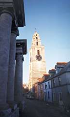

Ireland's second largest city, Cork is a county borough in Ireland and the capital of County Cork. It is located at the mouth of the Lee River at the head of Cork harbour.The word Corcaigh actually means marshland and the city was built in a marshy valley area where the Lee splits to form an island that is the heart of the city.
Tradition holds that the city was founded in the late 6th or early 7th century by St. Finbarr, who went there to kill the last dragon in Ireland and who built a monastery on the current south side of the city. Cork was taken by Henry II in 1172 and by Oliver Cromwell in 1649. The city is often called "Rebel Cork" because it was a centre of the 19th-century Fenian movement and played an active part in the Irish struggle for independence. In 1920 the centre of Cork was completely destroyed by the notorious Black and Tans during the War of Independence. The Mayor of Cork, Thomas MacCurtain, was killed by them in the same year. His successor, Terence MacSweeney, died in London's Brixton Prison after 75 days on hunger strike.

A famous landmark is the Shandon Steeple of St. Ann's Church, which contains the Bells of Shandon. Cork is the seat of University College (founded 1845; since 1908 part of the National University of Ireland). The Cork Film Festival is held each summer and it hosts a Jazz Festival each October Bank Holiday weekend . The famous Blarney Castle is just five miles north of the city.
Cork is a sporting town. In 1990, Cork was the first team of the twentieth century to capture an All-Ireland Championship in both Hurling and Gaelic Football in the same year. Cork also achieved this in 1890 and Tipperary followed in 1895. This is the city that named a bridge after a hurler (Christy Ring Bridge). The city is full of clubs that are great rivals, Nemo, The Barrs, The Glen, Na Piarsaigh to name a few. If you are in Cork during ' The Championship ' and any of these teams are involved, be sure and attend a match. The thrills and excitement should not be missed. Soccer fans support the local club Cork City.